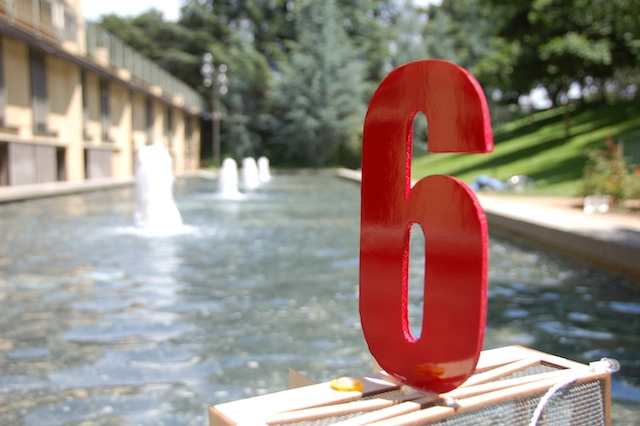

Somali Pirates Association
Jonas Ketterle, Ruddick Lawrence, Graham Doorley
ME 218C, Spring 2009
Gems of Wisdom
- If you have a weird software bug, check your timers.
- Assembly is really fun. Spend some time getting comfortable with it!
- Assembly: Make sure to service frequently occuring timer interrupts before any other interrupts, otherwise you may have problems.
- Assembly: Make sure to use memory locations 0x70 - 0x7F for storing registers when you enter the interrupt routines, because these are accessible from any bank.
- Buy a motor driver chip, don't make you own, for operating motors with high current draw.
- When driving large currents be sure to isolate your control circuits from your power circuits.
- Don't use a 0.8 ohm motor.
- Ace Hardware in Palo Alto has loads of nice metric hardware.
- Be wary of Molex connectors for they come loose VERY easily and can cause hours of debugging.
